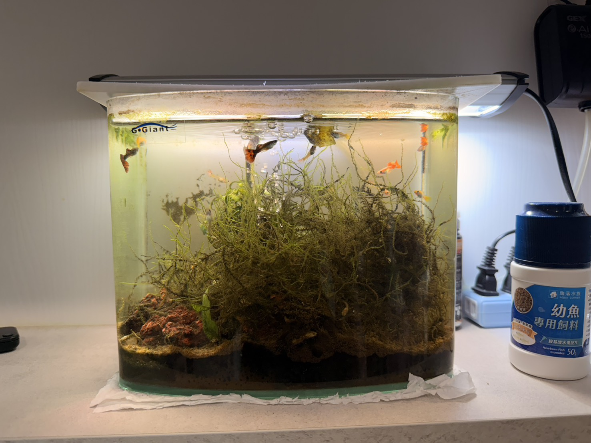
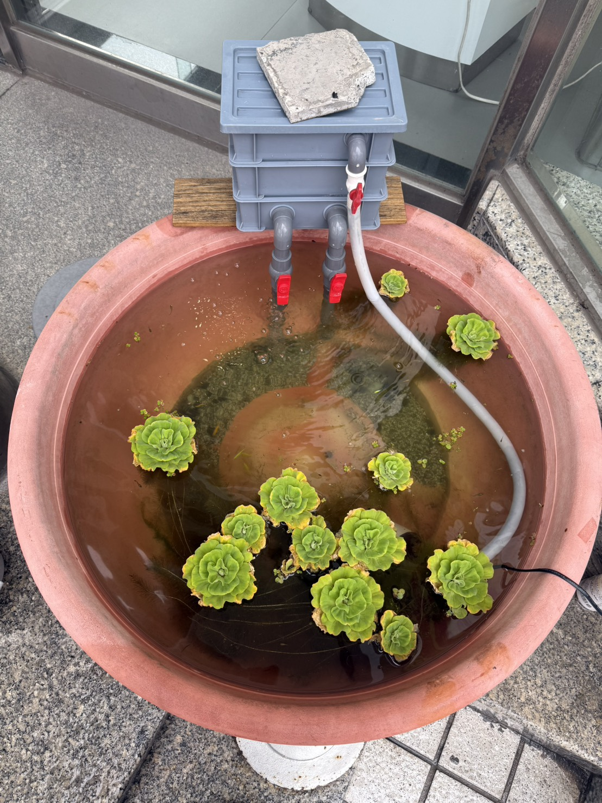
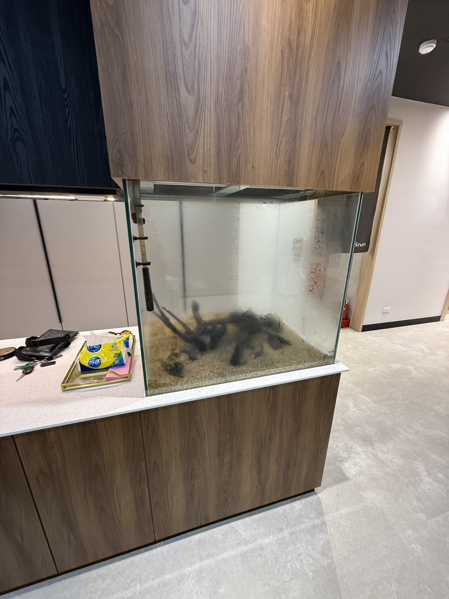
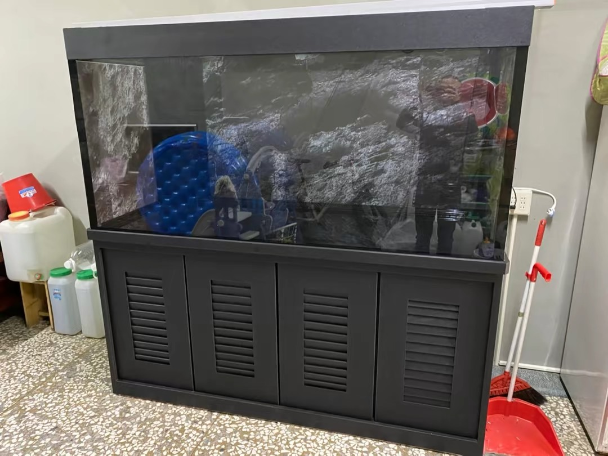

洗缸了沒?
清洗魚缸、魚池清洗、營業缸訂製、到府保養移缸服務
專業高效除藻工具，徹底清除魚缸壁面、大樓景觀池與造景上的頑固褐藻、綠藻與黑毛藻。
精準找出水質白濁成因，調整並重組魚缸與魚池過濾系統，恢復清澈見底好水質。
徹底清除底部殘餌與排泄物，消除魚缸與大樓魚池散發出的陣陣異味。
手動拖曳中央拉桿，親眼見證清澈奇蹟！


每一次施工，我們都用成果說話。
魚缸清潔、換水、設備整理。
搬運、培菌、重新造景。
職人細節施工紀錄。
真實客戶施工案例。
真實客戶施工案例。
真實客戶施工案例。
拍照諮詢
Line傳送魚缸、魚池與設備現況
初步報價
依尺寸與髒污狀況報價
到府服務
約定時間進行專業清潔
後續追蹤
提供日常維護與餵食建議
價格合理、完全沒有隱藏亂加價！師傅到府後動作迅速，還會根據魚缸目前的生態狀況給予很實用的餵食與換水建議。

處理速度很快,工作人員很快就將魚缸移除了

原本魚缸壁長滿了厚厚的綠藻，謝謝職人清洗魚缸非常乾淨，連造景洗得跟全新的一樣，水質變超透亮！
本來只是想做一個魚缸，沒想到完成後整個客廳質感直接提升一個等級！從丈量、設計、訂製到安裝都非常專業，施工細節很到位，玻璃、櫃體、管線都處理得很漂亮。售後也會耐心回答問題，讓人很安心。找專業的人做真的有差，值得推薦！

原本魚缸超綠，玻璃都是藻、水也很黃，過濾器裡面卡很多髒污。洗完之後整缸像新的一樣，玻璃超透、底部乾淨，連過濾器都拆開清洗，出水量變很順，魚的活動力也明顯變好了。施工很仔細，現場也收拾乾淨，之後會固定找這家保養。

這次大工程的魚缸搬運移缸跟擴缸，培菌手法很細心，搬運小心翼翼，魚隻完全沒有耗損，收費合情合理，大推！
* 實際費用依魚缸髒污程度、大樓魚池大小、營業缸訂製難度與移缸造景複雜度而定，歡迎拍照洽詢。